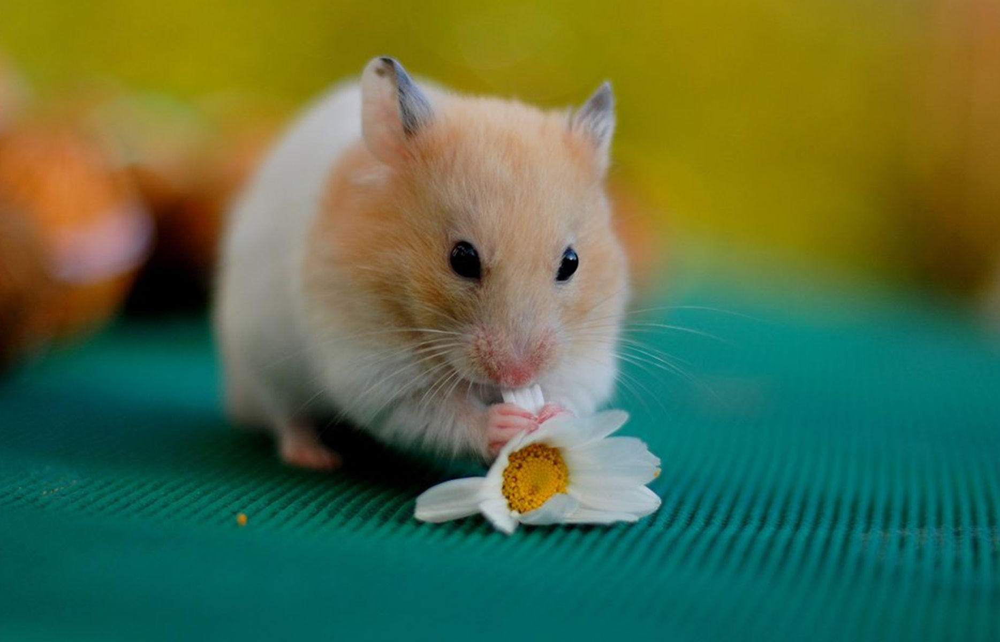
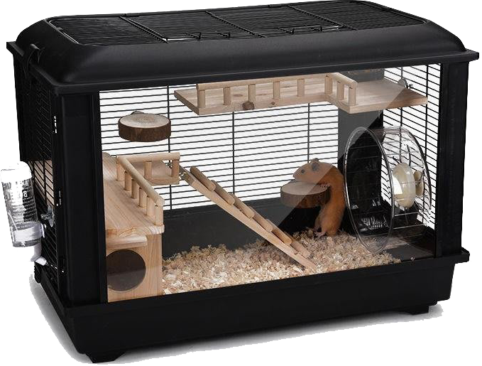

可愛的毛球總能在你下班下課最疲累的時候，為你注入滿滿的活力及幸福感，適合居住空間較小且想要一個知心夥伴的飼主們
黃金鼠
最為親近人的鼠種之一，喜歡跟鼠鼠們有大量互動的飼主最愛，體型較大，需要更大的空間飼養，吃得較多排泄也較多，需要更注意環境衛生
三線鼠
跟一線鼠相似，是對新手最友善的小型倉鼠種之一，性格相當溫和
一線鼠
體型略大於三線鼠，性格較暴躁於三線鼠，更為野性，其他特徵跟三線鼠非常相近
老公公鼠
小型倉鼠，體型幾乎是最小的，外觀上為較為炸裂的咖啡色、黑色、白色毛，性格膽小很容易受到驚嚇
必備用具
 飼養箱是給倉鼠們必備的設備之一，依倉鼠體型大小選擇飼養箱，熊鼠和黃金鼠推薦使用長60cm以上的箱子，體型較小的一線鼠、三線鼠及老公公可用40cm以上的箱子飼養
常見的飼養箱分為兩種，柵欄型飼養箱及改裝整理飼養箱，各有其優缺點
柵欄型飼養箱：市面上最常見的飼養箱，價格較便宜，柵欄型的外框讓倉鼠們有很多地方可以磨牙；但木屑、食物等內容物常常會被踢出箱外，維護性較差
改裝整理飼養箱：價格偏貴，但耐用性及觀賞性極佳，且方便飼主整理；缺點是要另外購買磨牙器具及要注意放置飼養箱的位置是否通風


"照顧倉鼠們的飲食必備器具為飲水器和食盆，兩樣都是小設備且便宜，但也別因此忽視其重要性"
倉鼠具有儲藏食物及挖洞的天性，這兩樣餵食器具就變得非常重要，市面上的鋼珠口和塑膠飲水器功能性差不多，看個人喜好選擇
而餵食盆有自動補充和一次性兩種，倉鼠有將多餘食物挖洞儲藏的天性，如果放太多食物會一次性地消失，而倉鼠們也常常忘記自己的食物放在哪裡
建議是由主人每天控制餵食量，但如果會有時不在家或無法天天餵食的飼主們，仍可以選擇自動補充的餵食器
滾輪是給精力充沛的倉鼠們活動的好工具，設置適當大小的滾輪可以讓倉鼠發洩體力，相對應的減少其他負面性的活動
滾輪的購買並非是比飼養的倉鼠大就可以了，太小的滾輪會使倉鼠在使用時過於彎曲脊椎而導致受傷，不適當的大小同時也會降低滾輪的使用率
建議飼主們購買直徑為倉鼠兩倍大的滾輪，熊鼠和黃金鼠可以直接購買最大的型號。
選擇適合倉鼠的墊材尤為重要，不僅可以讓倉鼠們過得更加舒服及愉悅，還可以避免疾病及受傷等意外
在墊材的選擇上，盡量以不會劃傷或是讓倉鼠難以活動的墊材為主，比如木屑及紙質類墊材
同時要注意墊材在吸收排泄物時會不會製造過多粉塵，過多的碎屑會影響倉鼠的呼吸道
1.請勿將兩隻倉鼠飼養在同一個飼養箱中，成年後的倉鼠具有領地意識，會跟其他重疊到地盤的倉鼠打架，嚴重時會死亡
2.請勿使用棉花等柔軟細絲材質最為墊材，雖然看似適合，但細思會造成倉鼠行動不便及纏住四肢至死的可能